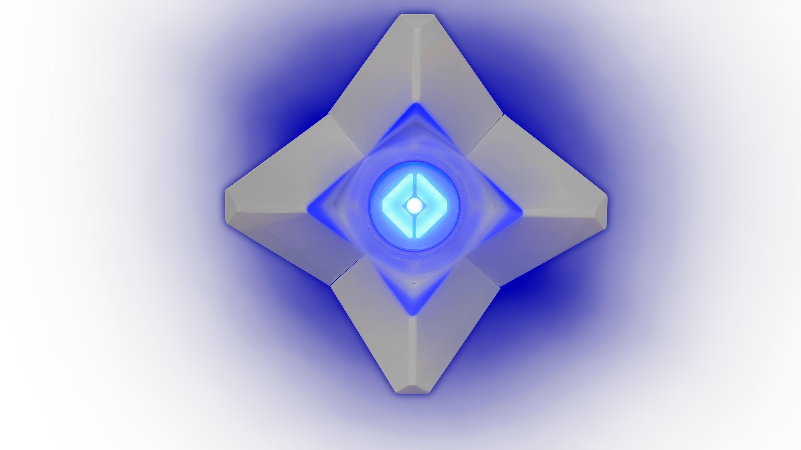
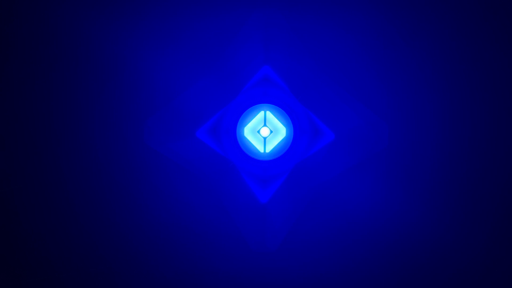
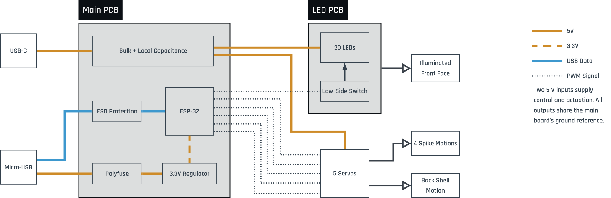
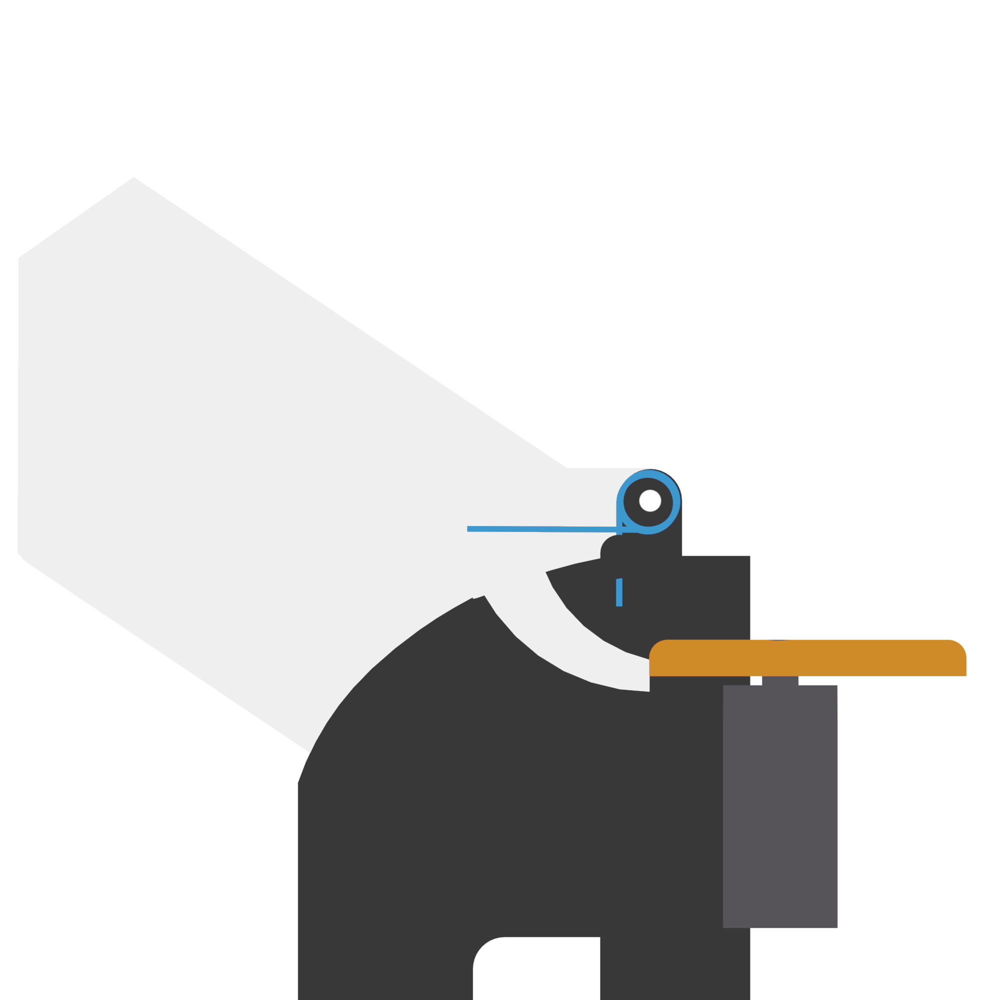
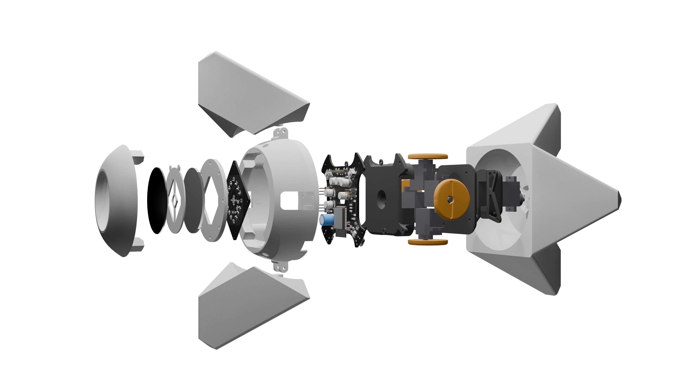
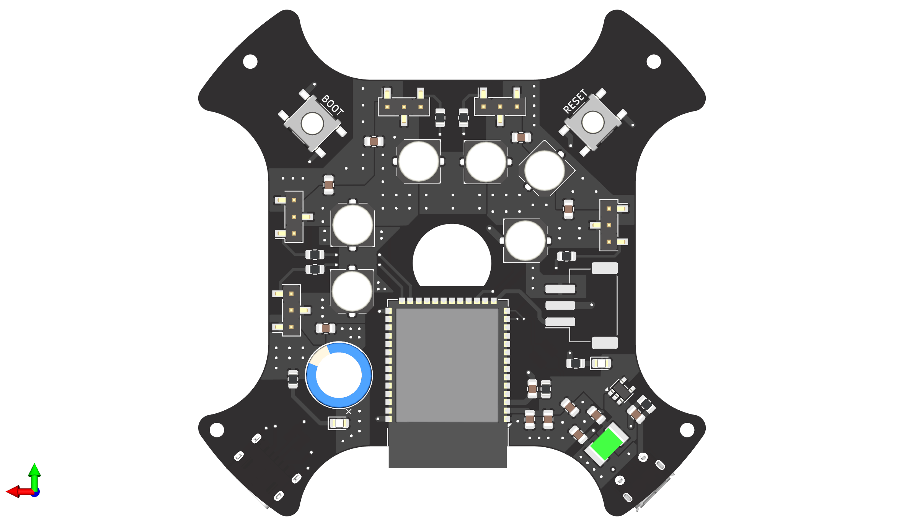
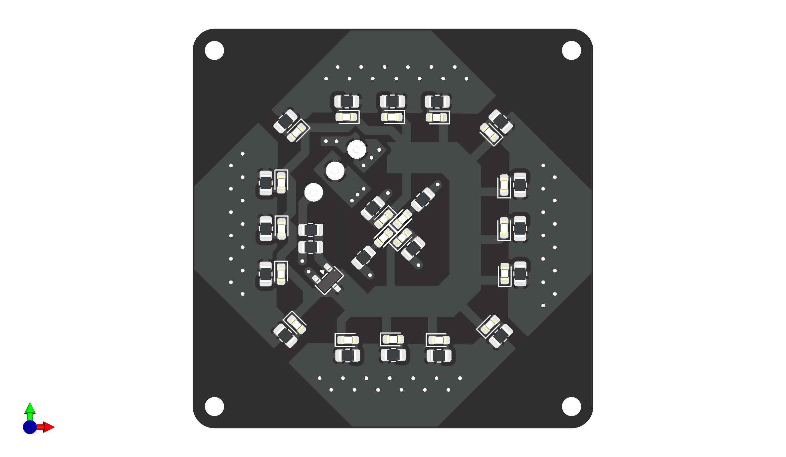

A shared envelope.
Cams, servo axes, and the PCB competed for space. Iterating the housing and board outline together produced a stack that fits the original shell.
PERSONAL ENGINEERING PROJECT / 2026
A compact
animatronic system.
SOLO DESIGN & BUILDMechanics · PCB design · Firmware


Four articulated spikes, a rotating rear shell, and coordinated lighting. Designed together, from the mechanisms to the boards and firmware.
Integrated prototype · Recorded performance
Real assembly · illuminated front view.
01 / IN MOTION
Four spikes, rear-shell rotation and light move as one. Synchronized gestures flow into ripples and simulated talking, then settle into a breathing-light idle.
The ESP32-S3 uses timed keyframes and independent PWM channels. Motion starts from indexed home positions and runs open loop, without sensor feedback or live input.
02 / THE BRIEF
Inspired by the Ghost from Destiny, I designed four articulated spikes, a rotating rear shell, and expressive lighting around a 100 mm main-sphere limit.
Preserving its proportions drove the design. Additional motion axes were dropped when their mechanisms competed with the servos, boards, and wiring for space.
03 / ARCHITECTURE

04 / MECHANICS

The servo-driven cam pushes a follower integrated into the spike. As the cam radius changes, the spike pivots around its hinge.
A preloaded torsion spring keeps the follower against the cam, allowing all four spikes to return regardless of orientation.
28.62–41 mm cam diameter across a half-turn.
CAD geometry, not measured spike travel.

The main PCB sits inside the middle shell. The four-part servo housing is assembled separately, then fastened over the board. Its central opening routes servo wires to the front-side connections.
The removable front assembly layers the LED board, face pattern and acrylic panels while allowing access to reset and boot buttons. Spike/followers and springs attach next, then cams and the rear shell. M2 screws and heat-set inserts make the joints reusable.
05 / ELECTRONICS

The four-layer main board clears the cams and keeps both USB connectors accessible. Internal 5 V and ground fills support routing on both faces.
Twenty LEDs, each with its own resistor. One PWM-controlled MOSFET shapes breathing and motion-synchronized brightness.
All five servos and the LED board operated together. Total system current remains unmeasured.

06 / REVISIONS
Cams, servo axes, and the PCB competed for space. Iterating the housing and board outline together produced a stack that fits the original shell.
The unsprung lower spike stayed open. Preloaded torsion springs made return independent of orientation.
The circular display never produced a usable image. A custom LED face preserved expression with a simpler interface—and became a stronger visual result.
07 / RESULTS
Ghost brings four articulated spikes, a rotating rear shell and a pulsing LED face into one compact, recognizable character. The mechanisms, two custom PCBs and firmware fit the intended envelope and work together in the recorded performance.
The strongest result is the integration: preserving the original proportions while giving the object expressive, coordinated motion.
Servo axes, board outlines, wire paths and assembly access had to evolve together. Solving those connections made the system work within a space no individual subsystem could claim for itself.
Rear-shell vibration still needed added foam damping. The recording demonstrates the integrated build; it does not establish long-term durability.
08 / NEXT REFINEMENTS
The rear shell vibrated heavily during motion. Added foam damping made it partly workable, but the rotation mechanism still needs a more stable support and damping solution.
LED-board wires snapped during assembly and needed resoldering plus hot-glue strain relief. Build cable support into the design and review the suspected startup-sensitive servo GPIOs.
The fixed demo ties each gesture to one timeline, limiting reuse and live control. Build named behaviors from the existing motion and lighting helpers so actions can be triggered and combined.